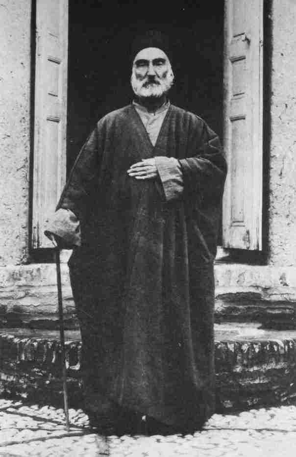
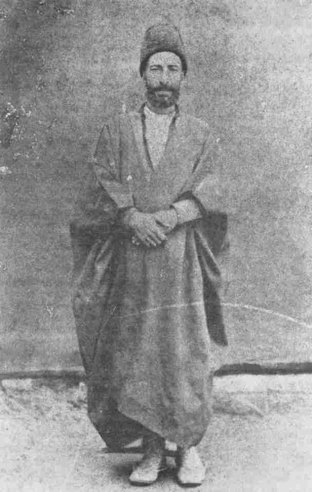
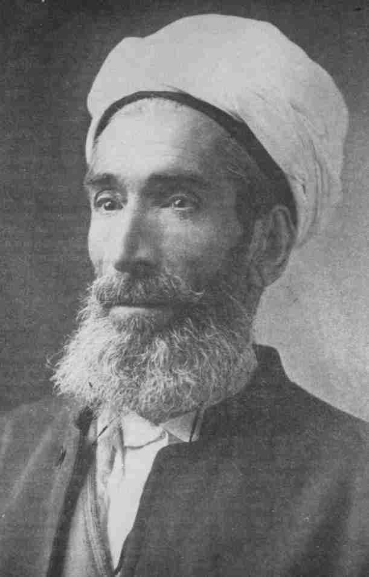
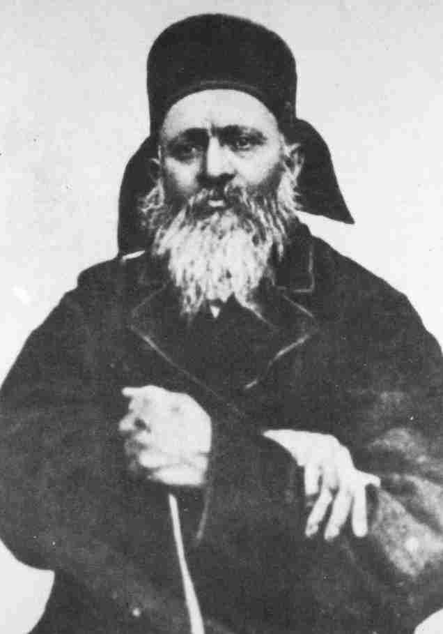

Lawh-i-Fu'ádFu'ád Páshá, Foreign Minister of the Ottoman Empire, had been a close collaborator of the Grand Vizir 'Álí Páshá in bringing about the exile of Bahá'u'lláh to 'Akká and His imprisonment there. In 1869 Fu'ád Páshá was dismissed from his post and subsequently died in France, at Nice. We have already seen how and in what terms Bahá'u'lláh had addressed the Grand Vizír in the Súriy-i-Ra'ís and the Lawh-i-Ra'ís. Now He revealed the Lawh-i-Fu'ád, another Tablet of great significance, in which He severely rebukes Fu'ád Páshá, declares that God had taken his life as a punishment, and describes in strong terms the agony of his soul in facing the wrath of God in the next life for having inflicted such sufferings upon His Supreme Manifestation. In this Tablet Bahá'u'lláh foreshadows the downfall of 'Álí Páshá and the Sultán himself in these prophetic words:
Soon will We dismiss the one* who was like unto him, and will lay hold on their Chief† who ruleth the land, and I, verily, am the Almighty, the All-Compelling.1It did not take long after the revelation of this Tablet until 'Álí Páshá was disgracefully dismissed from his post and died in AD 1871. At the same time a process of opposition to the Sultán was set in motion in Turkey which culminated in AD 1876 in his dethronement and imprisonment by revolutionaries; a few days later he was killed.
|
* 'Álí Páshá † Sultán 'Abdu'l-'Azíz.
1. Quoted by Shoghi Effendi, The Promised Day is Come, p. 63 [Lawh-i-Fu'ád] God Passes By, p. 208, p. 225, p. 231 |
|
|
As we shall see, the Lawh-i-Fu'ád was to play an important role in the conversion to the Faith of its foremost scholar, Mírzá Abu'l-Fadl. Shaykh Kázim-i-Samandar The Lawh-i-Fu'ád was addressed to Shaykh Kázim-i-Samandar, a native of Qazvín. This great man was one of the Apostles of Bahá'u'lláh and has been described by Shoghi Effendi as a flame of the love of God. His grandfather had met the Báb in Karbilá before His declaration, had witnessed His extraordinary powers of invocation at the time of prayer and become deeply enchanted with the grandeur and majesty of His person. His father Shaykh Muhammad, entitled Nabíl,* was one of the devoted followers of the Báb and attained His presence in the Fortresses of Máhkú and Chihríq. Later he went to Baghdád and attained the presence of Bahá'u'lláh. He suffered persecution and his home in Qazvín was the centre of the activities of the early Bábís. Shaykh Kázim-i-Samandar, born a few months before the Declaration of the Báb, grew up in such a home and from his earliest days associated with the early disciples of the Báb, among them some of the Letters of the Living and the uncle of the Báb. Even in childhood Shaykh Kázim showed a great enthusiasm for Bábí affairs and when he grew up he was a knowledgeable and devoted believer. Later he recognized the station of Bahá'u'lláh and became one of His outstanding followers, succeeding in diffusing the light of His Faith throughout Persia in general and in Qazvín in particular. When the news of the Declaration of Bahá'u'lláh and the claims of Mírzá Yahyᆠreached him, he made an exhaustive study of the Writings of the Báb. His conclusions that Bahá'u'lláh alone was the Promised One of the Bayán were |
* Not to be confused with Mullá Muhammad-i-Zarandí, Nabíl-i-A'zam or Mullá Muhammad-i-Qá'iní, Nabíl-i-Akbar. Letters of the Living |
|
|
clear and unmistakable. In AH 1283 (AD 1866-67) he wrote a treatise in Arabic denouncing Mírzá Yahyá's rebellion, refuting his arguments and demonstrating his claims to be utterly false. Bahá'u'lláh refers to this treatise in the Lawh-i-Siráj* and states that God had inspired Shaykh Kázim in writing it. It is reported that Bahá'u'lláh conferred the title of Samandar† upon Shaykh Kázim after the writing of this challenging treatise. In His Tablets Bahá'u'lláh often commends those who refute the arguments of the enemies of the Faith. In the Tablet of Salmán‡ He exhorts His followers in these words:
Warn, O Salmán, the beloved of the one true God, not to view with too critical an eye the sayings and writings of men. Let them rather approach such sayings and writings in a spirit of open-mindedness and loving sympathy. Those men, however, who, in this Day, have been led to assail, in their inflammatory writings, the tenets of the Cause of God, are to be treated differently. It is incumbent upon all men, each according to his ability, to refute the arguments of those that have attacked the Faith of God. Thus hath it been decreed by Him Who is the All-Powerful, the Almighty. He that wisheth to promote the Cause of the one true God, let him promote it through his pen and tongue, rather than have recourse to sword or violence. We have, on a previous occasion, revealed this injunction, and We now confirm it, if ye be of them that comprehend. By the righteousness of Him Who, in this Day, crieth within the inmost heart of all created things: 'God, there is none other God besides Me!' If any man were to arise to defend, in his writings, the Cause of God against its assailants, such a man, however inconsiderable his share, shall be so honoured in the world to come that the Concourse on high would envy his glory. No pen can depict the loftiness of his station, neither can any tongue describe its splendour. For whosoever standeth |
* see vol. 2, p. 262. † A legendary bird supposed to live in fire. ‡ see vol. 2, ch. 13. |
|
firm and steadfast in this holy, this glorious, and exalted Revelation, such power shall be given him as to enable him to face and withstand all that is in heaven and earth. Of this God is Himself a witness.2Shaykh Kázim-i-Samandar was an outstanding teacher of the Faith. Many early believers of Qazvín in particular owe their allegiance to the Cause to his indefatigable labours in propagating the Message of Bahá'u'lláh. His enthusiasm and faith, his zeal and devotion, deeply affected the hearts of his listeners and made them attentive to the Call of God in this age. He also played an important part in defending the Cause of God from the misrepresentations of the followers of Mírzá Yahyá and those who at a later date during the ministry of 'Abdu'l-Bahá were misled by Mírzá Muhammad-'Alí,* the Arch-Breaker of the Covenant of Bahá'u'lláh. The believers in Qazvín, who from the early days of the Faith were affected by the spirit of division, of controversy and Covenant-breaking, were greatly helped by the presence of Shaykh Kázim in their midst. Mainly through his steadfastness and perseverance, the community was transformed. Shaykh Kázim paid special attention to the education and upbringing of his children. A certain Mullá 'Alí entitled 'Mu'allim' (teacher) whom he had converted to the Faith and who was a man of learning, took up residence in the house and volunteered the work of educating the children.† This he did after reading Bahá'u'lláh's exhortation in the Kitáb-i-Aqdas:
Unto every father hath been enjoined the instruction of his son and daughter in the art of reading and writing and in all that hath been laid down in the Holy Tablet. He that putteth away that which is commanded unto him, the Trustees are then to take from him that which is required for their instruction, if he be wealthy, and if not the matter devolveth |
† In those days people of means often employed a tutor at home for their children's education.
2. Gleanings, CLIV, I. |
|
upon the House of Justice. Verily, have We made it a shelter for the poor and needy. He that bringeth up his son or the son of another, it is as though he hath brought up a son of Mine; upon him rest My Glory, My loving kindness, My Mercy, that have compassed the world.3It was the last sentence which inspired Mullá 'Alí to offer his services as a teacher to Shaykh Kázim's numerous children. He carried on this work for about thirty-six years. In one of His Tablets,4 Bahá'u'lláh commends Mullá 'Alí for implementing one of His exhortations and refers to him as the first teacher who has attained the good pleasure of God by carrying out what has been revealed in the Kitáb-i-Aqdas. He confers upon him His blessings, declares that the mere mention of him in that Tablet is the greatest reward for his soul, assures him that his name will be immortalized in all the schools throughout the world and intimates that he will send him a gift as a token of appreciation for his work. Bahá'u'lláh later instructed His Trustee, Hájí Amín, to send Mullá 'Alí the gift of an 'abá (cloak) on His behalf and added a note that the 'abá should be of very good quality. Shaykh Kázim-i-Samandar went twice on pilgrimage to attain the presence of Bahá'u'lláh in 'Akká. Among those who accompanied him on his second pilgrimage in AH 1308 (AD 1891) were Mullá 'Alí 'the teacher', and the Shaykh's son Mírzá Tarázu'lláh-i-Samandarí who served the Faith as an eminent Bahá'í teacher for many years. Shoghi Effendi was later to confer upon the latter the rank of Hand of the Cause of God. The Conversion of Mírzá Abu'l-Fadl The dire prophecies in the Lawh-i-Fu'ád, foreshadowing in clear terms the downfall of the Sultán and of 'Álí Páshá, were often the subject of speculation and discussion among the believers of those days. A great many non-Bahá'ís who attended Bahá'í gatherings heard the words of Bahá'u'lláh in |
3. Synopsis, pp. 15-16. 4. Quoted by Samandar, Táríkh-i-Samandar, p. 204.
["Unto every father..."] The Kitáb-i-Aqdas, ¶48 |
|
|
this and similar Tablets. They noted His warnings with awe and wonder and some even made their acceptance of the Faith conditional upon their fulfilment. Notable among them was the renowned Mírzá Abu'l-Fadl, a scholar of great eminence who, after having investigated the Faith, was looking for a conclusive proof to enable him to recognize its truth. He waited for the fulfilment of these prophecies. And when he embraced the Faith he became one of its greatest luminaries and one who defended the Faith from its adversaries with exemplary skill and devotion. Since Mírzá Abu'l-Fadl is one of the greatest scholars of the Faith, an apologist of the highest calibre and whose contributions to the literature of the Faith are immense, it is befitting to devote a few pages in this book to his cherished memory. The story of his encounters with the believers after having come in contact with the Faith is interesting indeed. In the year AH 1293 (AD 1876) when he was at the height of his career as the head of a theological college in Tihrán, he was approached by one of his students who asked him to help him reply to some of the arguments put forward by a few Bahá'ís with whom he was in contact. This man used to bring the questions to Mírzá Abu'l-Fadl and take back his comments to the Bahá'ís. There was a devoted believer at the time by the name of 'Abdu'l-Karím-i-Máhút Furúsh (draper) who had a shop in the bazaar; his home was a place for the meetings of the Bahá'ís and those who were investigating the Faith. These meetings often lasted till the early hours of the morning. Independently of his student who often brought up the subject of the Bahá'í Faith, Mírzá Abu'l-Fadl somehow became acquainted with 'Abdu'l-Karím and occasionally used to visit him in his shop. For some time, however, Mírzá Abu'l-Fadl did not discover that 'Abdu'l-Karím was a Bahá'í. Then a small incident happened which provoked him to encounter a Bahá'í directly. One Friday afternoon, Mírzá Abu'l-Fadl, in company with a few Mullás, left the city to visit a certain shrine in the |
||
|
countryside in the vicinity of the capital. They were all riding on donkeys. It was customary in those days for the people to leave the city for nearby villages on Fridays (which is a public holiday in Islámic countries) for pleasure as well as visiting holy places. It so happened that on the way out one of the donkeys lost a shoe, so the party called at the nearest blacksmith for help. Noticing the long beard and large turban of Mírzá Abu'l-Fadl--indications of his vast knowledge--the blacksmith Ustád Husayn-i-Na'l-Band (shoeing smith), who was illiterate, was tempted to enter into conversation with the learned man. He said to Mírzá that since he had honoured him with his presence, it would be a great privilege for him if he could be allowed to ask a question which had perplexed his mind for some time. When permission was granted he said, 'Is it true that in the Traditions of Shí'ah Islám* stated that each drop of rain is accompanied by an angel from heaven? And that this angel brings down the rain to the ground?' 'This is true,' Mírzá Abu'l-Fadl responded. After a pause, the blacksmith begged to be allowed to ask another question to which Mírzá gave his assent. 'Is it true', the blacksmith asked, 'that if there is a dog in a house no angel will ever visit that house?' Before thinking of the connection between the two questions, Mírzá Abu'l-Fadl responded in the affirmative. 'In that case', commented the blacksmith, 'no rain should ever fall in a house where a dog is kept.' Mírzá Abu'l-Fadl, the noted learned man of Islám, was now confounded by an illiterate blacksmith. His rage knew no bounds, and his companions noticed that he was filled with shame. They whispered to him, 'This blacksmith is a Bahá'í!' |
* It must be pointed out that the majority of the so-called traditions of Shí'ah Islám are man-made and consist of trivial sayings. However, there are some authentic and weighty utterances by the Holy Imáms which are in conformity with the form and the spirit of the Qur'án. And there are certain criteria for assessing the authenticity of such traditions. Bahá'u'lláh, for instance, has quoted many authentic traditions in the Kitáb-i-Íqán. |
|
|
This incident left a deep impression on Mírzá Abu'l-Fadl. The blacksmith, on the other hand, reported the whole story to 'Abdu'l-Karím and suggested that because his pride had been hurt, Mírzá Abu'l-Fadl would now welcome an encounter with a Bahá'í teacher in the hope of restoring his superiority. This assessment proved to be correct. For when 'Abdu'l-Karím invited Mírzá Abu'l-Fadl to take part in a discussion with a certain Bahá'í friend, he accepted the invitation. It appears that even up to this point, Mírzá Abu'l-Fadl had not realized that 'Abdu'l-Karím himself was a Bahá'í. The meeting was arranged in the home of 'Abdu'l-Karím. But the Bahá'í teacher whom 'Abdu'l-Karím had invited was a man devoid of learning. He was not an educated man. But his heart was connected to the Source of all Knowledge. Every abstruse subject that Mírzá Abu'l-Fadl brought up during the discussion and every objection he raised was dealt with in simple terms and in such a manner that he could not question the validity of the arguments put forward by the Bahá'í teacher. It may seem strange that uneducated people may become the recipients of the knowledge of God. Indeed, one of the proofs of the power of God in this Revelation is that in addition to the many learned people who ranked foremost among the teachers of the Faith, there were those who did not have a proper education and in some cases were even illiterate, but who succeeded in guiding many souls to the Cause of God. As has been stated in previous volumes,* the knowledge of God and His Manifestations, the power to discover the mysteries of life, to comprehend religious truth, and to understand the reality of man is not dependent upon academic education. This knowledge is bestowed upon the individual by God. And it is the heart of man which receives it and becomes the wellspring of enlightenment, power and understanding. Bahá'u'lláh has clearly stated that the prerequisite for becoming the repository of such knowledge and understanding |
||
|
is detachment from this world. In the opening paragraph of the Kitáb-i-Íqán He declares:
No man shall attain the shores of the ocean of true understanding except he be detached from all that is in heaven and on earth. Sanctify your souls, O ye peoples of the world, that haply ye may attain that station which God hath destined for you and enter thus the tabernacle which, according to the dispensations of Providence, hath been raised in the firmament of the Bayán.True understanding is the act of perceiving the inner meaning and the significance of a truth. Detachment from this world, a theme which has been constantly repeated and its meaning explained in the Writings of Bahá'u'lláh, is the key to living a life in harmony with the laws of creation. As we have already stated in previous volumes,* detachment from the world does not mean mendicancy, asceticism, poverty or carelessness in worldly affairs. One form of attachment, perhaps the most formidable, is the love of oneself and of one's |
* see vols. 1 and 2, 'Detachment'.
5. Kitáb-i-Íqán, p. 3 (Brit.), p. 3 (US). |
|
|
accomplishments. In the above passage, Bahá'u'lláh has emphatically closed the door to any alternative by which man may obtain the great gift of understanding, which is not the same thing as scholarly knowledge acquired through learning and study. A great scholar, a man of learning, may not necessarily be able to understand or discover the inner realities of God's creation and His Revelation. He must become detached from this world, and the greatest attachment for such a man is his knowledge!* Indeed, as Bahá'u'lláh has often stated in His Writings, acquired knowledge may often become a veil for preventing the heart from receiving the light of divine guidance and the gift of true understanding. 'Abdu'l-Karím, who was not educated, and the other uneducated people who were primarily involved in teaching the Faith of Bahá'u'lláh to eminent men of learning such as Mírzá Abu'l-Fadl, were endowed with the knowledge of God and possessed a great power of understanding. They had acquired these through their faith in Bahá'u'lláh and their detachment from their own ego and passion. In his first interview with the believers, Mírzá Abu'l-Fadl was surprised to find himself unable to cope with a Bahá'í who was not a learned man, and could not refute his arguments. However, he requested his host 'Abdu'l-Karím to arrange a meeting in which one of the learned Bahá'ís would take part, for he desired to have an encounter with a person of his own calibre so that he could establish once and for all his own superiority and demonstrate the falsity of the claims of the Báb and Bahá'u'lláh! The meeting was arranged, but 'Abdu'l-Karím did not invite a learned Bahá'í as Mírzá Abu'l-Fadl had requested. Although uneducated, 'Abdu'l-Karím in his great wisdom knew that a man who was so proud of his knowledge would be blind to the Message of God. He knew that what Mírzá Abu'l-Fadl needed most was someone who could expose his real ignorance of true |
* see vol. 2, pp. 39-43. |
One of the Apostles of Bahá'u'lláh and a devoted teacher of the Cause |
The blacksmith who first encountered Mírzá Abu'l-Fadl |
|
|
|
Eminent Bahá'í scholar, Apostle of Bahá'u'lláh and foremost expounder of His Faith |
A Zoroastrian envoy who became an admirer of Bahá'u'lláh and received some Tablets from Him. Mírzá Abu'l-Fadl acted as his secretary for some time and was his link with Bahá'u'lláh (see p. 269) |
|
religion. No one would be better suited to carry out this than a simple believer devoid of academic knowledge but possessed of faith and spiritual understanding. When Mírzá Abu'l-Fadl arrived for this meeting he found himself again confronted with uneducated people. In the course of discussion he was utterly confounded by the simple yet brilliant proofs which were put forward in support of the Faith and in answer to his questions. He marvelled at these men who were devoid of learning and knowledge yet possessed such a marvellous understanding of the mysteries of the Qur'án and other Holy Books. In the course of several meetings, discussions between Mírzá Abu'l-Fadl and his unschooled Bahá'í teachers continued. As anticipated by his host, these discussions had a sobering effect on Mírzá Abu'l-Fadl. Since his prime motive in coming to Bahá'í meetings was to disclose the absurdity of the claims of the Bahá'ís, he was remarkably humbled by his inability to refute the arguments presented by those few uneducated souls from among the believers, and his pride was badly hurt by the many humiliating defeats he encountered in the course of discussions with them. Later he met with learned Bahá'ís and conversed with them in numerous gatherings, always finding their arguments irrefutable. Once he entered into discussion with the renowned Mullá Muhammad-i-Qá'iní (Nabíl-i-Akbar).* At the end of that meeting he is reported to have exclaimed in an astonished tone: 'By God! No one could ever be found capable of withstanding the force of argument of this great man of knowledge.' In one of his writings, Mírzá Abu'l-Fadl describes his early days of contact with the Faith in these words:
In the year AH 1293 (AD 1876) when the writer of these pages [i.e. Mírzá Abu'l-Fadl] was a resident of Tihrán and steadfast in the faith of Shí'ah Islám, through some incidents he established association with the people of Bahá. The |
* see vol. 1, p. 91. |
|
prime object of his endeavours was to compel them to surrender and help stifle their growth. For nearly eight months he held many a debate with the learned of this Faith. At the end of this period he found that all his vain imaginings had been broken down and had vanished. He then began to tread the path of search after truth. He exerted all his efforts in investigating the proofs of this Faith, established close association in a suit of brotherhood with the leaders of all religions, the Jewish, Zoroastrian, Christian, Sunní, Shí'ah and Azalí, made extensive enquiries from both friends and foes concerning the history of the Founder of this Faith, studied the Holy Books attentively, meditated on the words of gnostics and divines most carefully, and prayed in the dead of night and at dawn supplicating the Almighty in a state of utter helplessness and anguish to bestow upon him guidance and grant him a seeing eye--until at last, through the operation of the will of God, he acquired a penetrating insight into revealed religions, and his distressed heart was filled with calm and certitude.6But before reaching the final stage of attaining certitude and embracing the Faith, Mírzá Abu'l-Fadl went through a great deal of intellectual struggle. His mind was unable to reject the truth of the Cause but his heart was not touched by the light of faith and assurance. During this period of search he read most of the Writings of the Báb and Bahá'u'lláh that were available. The story of his reading the Kitáb-i-Íqán for the first time and his reactions are recorded in a previous volume.* That incident is not only highly entertaining: at the same time it reveals the purity of his motive. When Mírzá Abu'l-Fadl found himself utterly confounded by the proofs and arguments which his Bahá'í teachers had put forward, he entertained the idea that not until Bahá'u'lláh performed a miracle for him would his heart be satisfied. The Bahá'ís explained to him that miracles could not be regarded as a conclusive proof of the truth of the Messengers of God, for |
* vol. 2, pp. 219-20.
6. From a treatise known as Risáliy-i-Iskandaríyyih. |
|
they were not capable of being witnessed universally and at all times. They were only meaningful for the few who had seen them. Furthermore it was not for man to test God. But Mírzá Abu'l-Fadl insisted. He wrote a few questions on a paper, placed it in an envelope, sealed it with his own seal and handed it to 'Abdu'l-Karím for safe keeping. He then placed a blank sheet of paper in another envelope and asked 'Abdu'l- Karím to forward it to Bahá'u'lláh. He stated that if his questions were answered he would entertain no doubt about the truth of the Cause.
'Abdu'l-Karím, accompanied by Mírzá Abu'l-Fadl, took the blank letter and the sealed envelope to the home of Hájí Muhammad Ismá'íl-i-Dhabíh* so that he could forward the letter to Bahá'u'lláh. Mírzá Abu'l-Fadl later told the story to Hájí Mírzá Haydar-'Alí, whose account is summarized in the following translation:
When we arrived we learnt that the Hájí was not at home, but his wife, who knew 'Abdu'l-Karím...warmly welcomed us and insisted with such love and hospitality that we went inside...We entered a room in which there were books and a case containing Holy Tablets...She gave us permission to open the case if we wished and study the Holy Writings. As 'Abdu'l-Karím was unable to read, he asked me if I would read for him. Through courtesy which was characteristic of me I complied. There was a Tablet written on blue paper addressed to Sultán 'Abdu'l-'Azíz.† As I read it, I came upon the story of the 'Show of Sultán Salím'‡ and I was fascinated by it. I found the passages to be of the utmost eloquence, lucidity |
* see vol. 2, pp. 411-13. † Hájí Mírzá Haydar-'Alí seems to have confused the issue of the Tablets. These were the Lawh-i-Ra'ís and the Lawh-i-Fu'ád addressed to 'Álí Páshá and Fu'ád Páshá respectively and not to the Sultán, although references are made to the Sultán in these Tablets. ‡ As a child, Bahá'u'lláh attended the wedding feast of one of his brothers in Tihrán. There He saw a puppet-show which he recounts in the Lawh-i-Ra'ís. |
|
and sweetness. The more I read it, the more I wanted to read. I had never in all my life come across such wonderful utterances, which captivated my mind and attracted my heart. But I was thinking of everything in my mind except that these were the words of God! |
* Sultán 'Abdu'l-'Azíz. † This is a passage from the Lawh-i-Fu'ád, see p. 87. From what Hájí Mírzá Haydar 'Alí narrates, one concludes that Mírzá Abu'l-Fadl had first read the Lawh-i-Ra'ís (revealed in 'Akká) and then the Lawh-i-Fu'ád. It is reasonable to assume that he read the Súriy-i-Ra'ís as well, because the latter (which was addressed to 'Álí Páshá) was revealed in honour of Dhabíh in whose house Mírzá Abu'l-Fadl was. |
|
Bahá'u'lláh and tore them up and declared that for me the fulfilment of these prophecies would constitute the proof and a criterion for truth. I also got a pledge that no one would talk to me about the Faith any more until these prophecies were fulfilled. |
* Not to be confused with the renowned Hájí Mírzá Haydar-'Alíyi-Isfahání whose chronicles we are quoting in these pages. † see Nabíl-i-A'zam, The Dawn-Breakers. ‡ The 'abá was a cloak worn by orientals in those days. It was normally placed over the shoulders, but on cold days it was customary to pull it over one's head. |
|
what they were aiming at, I flared up with rage and shouted at them angrily, 'It is no concern of mine that the Sultán has been deposed. I am not a relative of his.' 'Did you not make your acceptance of the truth of this Faith', they reminded me, 'dependent upon this event?' I was so convulsed with rage that I walked away without saying farewell. I did not proceed to where I was intending to go; instead I went back home. |
||
admonish myself in these words: 'It is about one year that you have been associating and arguing with these Bahá'ís. These men are illiterate and uneducated, yet they have asserted their ascendancy over you every time, they have adduced proofs and demonstrated the validity of their Cause. Although you consider yourself to be a learned man and a researcher in the Holy Books, commentaries and traditions, yet you know that these men are much more resourceful than you are. It is as if they are inspired and assisted by God, and the Holy Spirit speaks through them. You have also been a witness to their exalted character and heavenly virtues. Why then should you interpret their words as the breathings of the evil whisperer? You remember how enchanted you were when you read the story of the 'Show of Sultán Salím' in the Lawh-i-Ra'ís! How you were attracted by the eloquence and sublimity of those words! Now, you ought to read and investigate the writings of the one who claims to be the revealer of the Word of God with the eye of justice and fairness. If this Cause be untrue, the first to contend it is God. Therefore, its survival is impossible... |
* In Islám, this expression is used as the response of the believer to the call of God when He manifests Himself to him. |
|
heights of spirituality to which I had been transformed...I knew that if I served these souls who had become the cause of my guidance to the end of my days, and if I laid down my life in their path, I should never be able to repay them for giving me eternal salvation and spiritual life...After embracing the Faith of Bahá'u'lláh, Mírzá Abu'l-Fadl became an entirely new creation. He acquired keen spiritual insight and a faith seldom seen among the followers of Bahá'u'lláh. Probably the reason for this, in the first instance, was the purity of his heart which enabled him in his arduous journey of search after truth to battle through and tear up many veils of pride, superstition and vain imaginings, until there was nothing left but a pure spirit attracted to Bahá'u'lláh as a piece of iron would be to a powerful magnet. So complete was this attraction that, like to the iron when it becomes magnetized, he surrendered his will entirely to that of Bahá'u'lláh and as a result became a spiritual giant adorned with such virtues and accomplishments that few, if any, of the Apostles of Bahá'u'lláh have surpassed him in qualities and perfections. In the second instance, through the influence of the Faith of Bahá'u'lláh, his vast knowledge of religion, history and philosophy acquired a new dimension, a new quality and a new power. The forces of the Revelation of Bahá'u'lláh acted as rays of light, and his knowledge as the eye. The combination of the two brought him new vision. This knowledge, now guided by the light of faith and coupled with detachment from all earthly things, bestowed upon him the gift of true |
7. From Hájí Mírzá Haydar-'Alí's unpublished biography of Mírzá Abu'l-Fadl. |
|
|
understanding of such magnitude that he became a wellspring of divine knowledge. He used this knowledge as a tool to understand, to the extent that it is possible for man to do, the inner reality of the Revelation of Bahá'u'lláh. Through the knowledge of God, detachment from all earthly things, and living the life, he recognized the station of Bahá'u'lláh and the greatness of this Cause to a degree that perhaps only a few have attained. The recognition of the Manifestation of God (Bahá'u'lláh, in this day) is the first step towards the spiritual development of the soul. And as this recognition is relative and varies from person to person, it is apparent that those who succeed in recognizing the grandeur of the Revelation of Bahá'u'lláh in depth, and become truly aware of His transcendent glory and awe-inspiring majesty, will be endowed with far greater powers of spiritual understanding. Mírzá Abu'l-Fadl achieved this to a supreme degree and became the fulfilment of these words of Bahá'u'lláh:
Whoso hath recognized Me, will arise and serve Me with such determination that the powers of earth and heaven shall be unable to defeat his purpose.8That he had perceived with such penetrating insight the significance and greatness of the Day of God ushered in by Bahá'u'lláh is evident from his writings and the example of his life. The late Ali-Kuli Khán,* who spent a considerable time with Mírzá Abu'l-Fadl, has described the ardour with which the latter used to pray, and then comments: 'The reason he prayed with such fervour and such weeping was his concept of the greatness of God and his own nothingness; his belief that his very existence, bestowed on him by Divine mercy, was a sin in this Day "whereon naught can be seen except the |
* He rendered notable services to the Faith in the early days of its establishment in the West; among his services were many works of translation. 8. Synopsis, p. 14. |
|
|
splendours of the Light that shineth from the face of thy Lord..."' 9 Through these qualities Mírzá Abu'l-Fadl became a source of divine knowledge and an embodiment of Bahá'í virtues, of humility and self-effacement to such an extent that 'Abdu'l-Bahá in one of his talks10 after Mírzá Abu'l-Fadl's passing described him as a 'supreme exemplar for the Bahá'ís to follow'. On another occasion He referred to him as a 'lamp of this Cause', 'the light of guidance', 'a brilliant star', 'a billowing ocean'. When in America, the Master sent a telegram to a friend in Egypt directing him to take great care of Mírzá Abu'l-Fadl and saying, 'His person is to be regarded as My own self.' The same Ali-Kuli Khán has described him in these words: 'If I had never seen 'Abdu'l-Bahá and Shoghi Effendi, I would consider Mírzá Abu'l-Fadl the greatest being I ever laid eyes on.' 11 Mírzá Abu'l-Fadl knew the station of Bahá'u'lláh to be so exalted, and himself so unworthy, that he felt unable to seek permission to attain His presence. He was one of the Apostles of Bahá'u'lláh who never gazed upon the face of His Lord. But he attained the presence of 'Abdu'l-Bahá for the first time in 1894 and basked in the sunshine of His love for about ten months. Here he showed such humility and self-effacement that the believers who were present learned from him the meaning of true servitude and utter nothingness. Ali-Kuli Khán has described this so beautifully:
...Yes, but really to know his greatness, you had to watch him when he was in the presence of 'Abdu'l-Bahá. Then his knowledge reduced him to nothingness, and you thought of a pebble on the ocean shore.12Concerning the great bounty of meeting 'Abdu'l-Bahá he has written this account:
When in AD 1894 the author travelled to the Holy Land and, |
9. The Bahá'í World, vol. IX, p. 858. 10. Quoted by Mehrábkhání, Sharh-i-Ahvál-i-Mírzá Abu'l-Fadl-i-Gulpáygání, p. 342. 11. The Bahá'í World, vol. IX, p. 856. 12. ibid. p. 860. |
|
through the assistance of the Divine Favors, attained unto the visit of His Holy Threshold, he was amazed to behold in Him all virtues and perfections. These were witnessed during ten months residence in the shelter of His nearness. Many a time we were in His Holy Presence when multitudes of prominent people were there, such as judges, doctors and great military and civil officials of different nationality, religion and language. While He was in their midst large packages of letters from all parts and countries of the world were brought to Him. Although encompassed with insurmountable difficulties, He--Glorified is His Name and Grandeur!--continued to answer questions and requests made by those present, while He wrote replies to each letter. These Tablets and replies were written without meditation, pause of pen, or preliminary rough-copy, and without the help of a scribe. All regions are filled with His Tablets and hearts are attracted through their spread. He has caused the Voice of His Lord...to reach the high heavens. Through the words of His widespread epistles, which exhale the purest fragrances of His Utterances, souls are uplifted; and from their verses the fountains of knowledge and wisdom flow onward.13This great man, whom Bahá'u'lláh and 'Abdu'l-Bahá cherished so dearly, and the example of whose life 'Abdu'l-Bahá bade His followers emulate, in memory of whose outstanding services to the Cause is named one of the doors of the Shrine of the Báb, served the Faith of God with distinction mainly because he had detached himself from all earthly things and had the capacity to become the recipient of the bounties and confirmations of Bahá'u'lláh.*
|
* For an account of Mírzá Abu'l-Fadl's activities as a Bahá'í teacher, see Appendix II.
13. Bahá'í Proofs, pp. 244-5. |